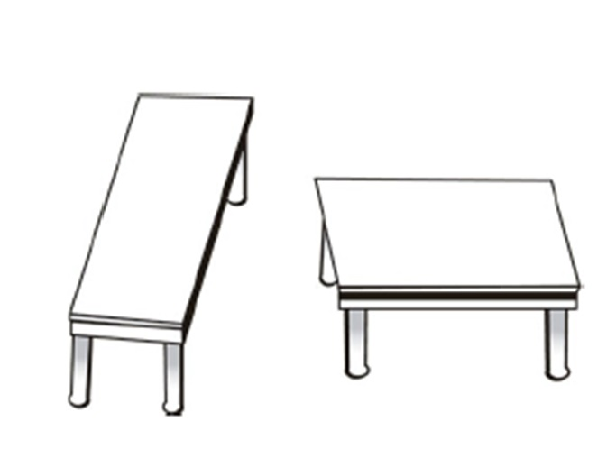
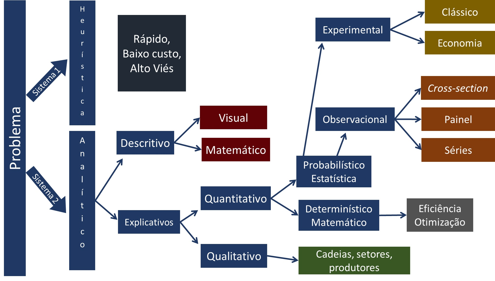

{kind=link}
{kind=link}
{kind=link}
{kind=link}
{kind=link}
{kind=link}
{kind=link}
{kind=link}
{kind=link}
{kind=link}
{kind=link}
{kind=link}
{kind=link}
flowchart LR
A[PROBLEMA] --> B[Estratégia de Decisão]
B --> C{Solução é BOA?}
4 Uma Introdução à Estatística
Conceitos Inciciais
4.1 Motivando
4.1.1 Um Experimento Importante
O avanço do conhecimento científico se apoia, historicamente, na capacidade de formular boas perguntas e testá-las de forma sistemática. Um dos primeiros exemplos marcantes dessa prática ocorreu durante o século XVIII, no contexto das longas viagens oceânicas realizadas por marinhas europeias. Nessas expedições, marinheiros frequentemente adoeciam e morriam em grande número, sem que se soubesse a verdadeira causa. As hipóteses dominantes na época atribuíam as doenças ao “ar ruim” e às condições insalubres dos navios — ideias alinhadas à chamada teoria miasmática das enfermidades.
A questão que se colocava era: qual a verdadeira causa das mortes e quais soluções poderiam evitá-las? Essa pergunta inaugurou um dos primeiros experimentos controlados da história da medicina.
4.1.2 O Experimento de James Lind (1747)
Em 1747, o médico naval britânico James Lind, servindo a bordo do HMS Salisbury, realizou um estudo pioneiro que hoje reconhecemos como um ensaio clínico controlado. Lind selecionou um grupo de marinheiros acometidos por escorbuto e os dividiu em diferentes grupos de tratamento, garantindo condições semelhantes entre eles. Cada grupo recebeu uma intervenção distinta — vinagre, água do mar, cidra, entre outras substâncias —, mas apenas um grupo recebeu limões e laranjas.
O resultado foi inequívoco: os marinheiros que consumiram frutas cítricas se recuperaram rapidamente, enquanto os demais continuaram doentes. Com isso, Lind demonstrou empiricamente que a causa do escorbuto não estava no “ar ruim”, mas sim na deficiência de um nutriente essencial presente nos cítricos e posteriormente identificado como a vitamina C.
4.1.3 A Descoberta Revolucionária
Cura do Escorbuto
A descoberta de Lind representou um marco para o desenvolvimento do método científico na medicina. A partir da observação cuidadosa e da formulação de hipóteses testáveis, foi possível demonstrar a relação causal entre a ausência de determinado nutriente e a manifestação da doença. O estudo inaugurou o uso sistemático de grupos de comparação, controle de variáveis e análise empírica de resultados, práticas que se tornariam pilares da ciência moderna.
Essa experiência mostrou que o conhecimento científico não avança por mera especulação, mas por testes controlados e evidências observáveis, capazes de distinguir entre correlação e causalidade.
Essa experiência mostrou que o conhecimento científico não avança por mera especulação, mas por testes controlados e evidências observáveis, capazes de distinguir entre correlação e causalidade.
4.2 A Ciência
4.2.1 Perguntado “Por que”
O ponto de partida da ciência é a curiosidade sobre o mundo: por que as coisas acontecem da forma como acontecem? Essa indagação, aparentemente simples, é o motor que impulsiona toda investigação científica. A ciência busca compreender não apenas o que ocorre, mas também as causas e mecanismos subjacentes aos fenômenos observados.
Durante séculos, especialmente até a metade do século XIX, o conhecimento sobre diversos processos naturais era limitado. Na medicina, por exemplo, pouco se sabia sobre doenças infecciosas e seus modos de transmissão. Somente com os avanços de pesquisadores como Louis Pasteur (1822–1895) é que se consolidou a Teoria Microbiana da Doença, transformando profundamente a prática médica e a saúde pública.
4.2.2 Perguntado “Por que”
Antes desses avanços, outros cientistas já haviam dado contribuições fundamentais à sistematização do conhecimento. Em 1662, John Graunt publicou a primeira tábua de mortalidade, no livro Natural and Political Observations Made upon the Bills of Mortality. Esse trabalho foi um dos primeiros esforços para quantificar e descrever padrões populacionais e de saúde a partir de registros empíricos.
Graunt aplicou raciocínios quantitativos a dados sobre nascimentos e mortes, inaugurando a tradição estatística na análise de fenômenos sociais e biológicos. Mais de dois séculos depois, Pasteur ampliou essa lógica de observação e mensuração, demonstrando experimentalmente que doenças contagiosas decorriam da ação de microrganismos, e desenvolvendo o processo de pasteurização como medida de prevenção. Somente em 1873 a academia de Medicina Francesa defende a tese que doenças contagiosas e processos infecciosos tem os microrganismos como responsáveis.
Esses marcos ilustram como o avanço da ciência depende da capacidade de observar, mensurar e explicar os fenômenos de maneira sistemática e replicável.
4.2.3 Objetivo da Ciência
O propósito último da ciência é tornar o mundo um lugar melhor para vivermos, por meio da geração de conhecimento e de inovação tecnológica. Entretanto, o progresso técnico não ocorre isoladamente: ele depende do entendimento teórico dos fenômenos.
A teoria é o que permite explicar o mundo de forma coerente, organizando as observações em um quadro interpretativo. É a partir dela que se formulam hipóteses, se testam explicações e se criam soluções práticas. Assim, as inovações técnicas são frutos do entendimento teórico, e não o contrário, sendo que a boa ciência combina observação empírica com reflexão conceitual.
4.2.4 O Uso Inadequado da Ciência
Embora a ciência tenha transformado profundamente o modo como compreendemos o mundo, seu prestígio também pode ser utilizado de forma indevida. A invocação do termo “científico” muitas vezes é empregada para atribuir credibilidade a afirmações infundadas, criando uma aparência de legitimidade sem o devido rigor metodológico.
WarningCredibilidade Fake
Nada confere mais autoridade a uma alegação do que a sugestão de que ela foi “comprovada cientificamente” ou “baseada em evidências científicas”.
No entanto, nem toda afirmação que se apresenta como científica é, de fato, resultado de um processo de investigação rigoroso. É comum encontrar exemplos de pseudociência, discursos que simulam o formato da ciência, mas carecem de fundamentos empíricos verificáveis.
Afirmações de que extraterrestres visitaram a Terra, de que plantas sentem prazer e dor, ou de que celulares causam tumores cerebrais, são exemplos de como o rótulo “científico” pode ser usado de maneira enganosa.
Da mesma forma, teorias conspiratórias, como a ideia de que governos ocultam informações sobre eventos históricos, frequentemente se valem de uma retórica pseudoacadêmica para convencer o público. Esses casos ilustram como a aparência de método pode ser usada para mascarar a ausência de evidência.
4.3 Método Científico
Observar, Explicar e Testar
O método científico se organiza em três etapas principais: observar, propor explicações e testar. Cada uma delas é essencial para transformar dados em conhecimento confiável e orientar a investigação de forma estruturada.
4.3.1 Observar
Observar significa ter uma noção clara dos fatos que envolvem o fenômeno que estamos estudando. Ciência é a arte de fazer boas observações, capazes de identificar e focar nos aspectos mais relevantes do que está acontecendo. A observação fornece pistas sobre por que um fenômeno ocorre e permite avaliar se diferentes explicações podem ser plausíveis ou devem ser descartadas.
NoteNem sempre a observação é simples ou direta.
O processo de observar pode ser limitado por dados insuficientes ou difíceis de acessar. É importante reconhecer essas dificuldades e trabalhar para minimizar seus efeitos.
4.3.1.1 Observções devem ser:
- Ter clara noção de quais os fenômenos relevantes
- Encontramos uma maneira de garantir que não negligenciamos nada no processo de fazer nossas observações?
- Não viesada: Cegueira a mudança e Cegueira desatenta https://www.youtube.com/watch?v=FaAIW8WFBq8
- O que sabemos com certeza? O que é baseado em fatos e o que é baseado em conjecturas ou suposição?
- Evite suposições inocentemente incorporadas
- Consideramos alguma informação comparativa necessária?
- As nossas observações foram contaminadas por expectativas ou crenças?
4.3.1.2 Como conseguir boas observações e evitar viéses?
Para alcançar observações mais precisas, é importante recorrer a instrumentos que ampliem nossos sentidos e utilizar medições quantitativas que descrevam os fenômenos de forma mais fiel. Assim, reduzimos as distorções que decorrem da percepção humana e obtemos registros mais objetivos e verificáveis.

4.3.2 Propor Explicação
Explicar é apresentar um conjunto de fatores que mostram como ou por que um efeito ocorreu. É o momento de propor uma história explicativa, uma conjectura que, se verdadeira, daria sentido ao fenômeno observado.
Perguntas como “por que o sol nasce e se põe todos os dias?” ilustram esse tipo de esforço. Vejamos:
O Primeiro a enteder o nascimento do sol foi Nicolau Copérnico (1473-1543), que propôs o modelo heliocêntrico do sistema solar. Segundo esse modelo, a Terra gira em torno do Sol, o que explica o movimento aparente do sol no céu ao longo do dia.
Entretanto, as primeiras provas vieram quase século depois com Galileu , 1610, com as observações de Venus e as fases da Lua. Interessantemente, em 1633 Galileu Galilei foi julgado e condenado pela Inquisição Católica pela sua defesa do heliocentrismo.
NoteHistória Explicativa
Portanto, a primeira etapa na tentativa de dar sentido a um conjunto de fatos intrigantes é propor o que poderíamos chamar de uma história explicativa, um conjunto de conjecturas que, se verdadeiras, explicariam o quebra-cabeça.
4.3.2.1 Uma Boa Explicação
Uma hipótese é uma explicação provisória e ainda não comprovada sobre algo específico Oferece uma explicação para um gama mais limitada de fenômenos , um único evento ou um fato.
Já uma teoria é um corpo de conhecimento mais amplo e consolidado, construído a partir de múltiplas verificações e evidências, como as teorias do Big Bang, Teoria da evolução ou dos germes das doenças.
4.3.2.2 CUIDADO
WarningImportante
É comum ouvirmos “isso é apenas uma teoria”, como se fosse uma opinião. No entanto, na ciência, uma teoria é uma explicação robusta, apoiada por evidências e testes repetidos.
4.3.2.3 Vamos Pensar: Obsedidade no Brasil
Os brasileiros enfrentam um sério problema de peso. Entre 2006 e 2019, o número de pessoas com sobrepeso ou obesidade aumentou em 72%, chegando a 20% da população. Esses dados nos convidam a construir hipóteses que expliquem o fenômeno, mesmo que provisoriamente. O objetivo não é acertar, mas exercitar o raciocínio explicativo.
WarningFatos e Observações
Segundo a pesquisa Vigitel do Ministério da Saúde, para população acima de 18 anos o percentual de pessoas com obesidade subiu de 11,8% em 2006 para 20,3% em 2019.
Quais as suas hipóteses para explicar esse fenômeno? Não precisa estar correta, mas deve explicar o fenômeno, caso seja verdadeira.
4.3.3 Testar Explicação
Testar uma explicação significa verificar se suas previsões se confirmam.
Primeiro, observam-se as consequências da explicação, o que deveria acontecer se a explicação estiver correta?
Segundo, desenha-se um experimento ou estudo para confrontar essa previsão com os dados. Se os resultados estiverem de acordo, seguimos na direção certa; se não, a hipótese precisa ser revisada.
ImportantFácil Falar Difícil Fazer
Apesar da simplicidade do método científico em teoria, sua aplicação prática exige cuidado e rigor.
4.4 A Causalidade
Compreender a causalidade é uma das tarefas centrais da ciência. Depois de observar um fenômeno e propor uma explicação, é preciso determinar se existe de fato uma relação causal entre os fatores envolvidos. Nem toda associação observada implica causalidade: dois eventos podem ocorrer juntos sem que um cause o outro.
4.5 Tipos de Estudos e Relações Causais: Randomização, estudos prospectivos e retrospectivos
4.5.1 Estudos Causais Randomizados.
Os estudos causais baseados em randomização partem de um conjunto de sujeitos que, antes do início do estudo, apresentam características muito semelhantes. Nenhum desses sujeitos foi previamente exposto ao agente causal suspeito. A partir daí, eles são aleatoriamente designados para dois grupos: um grupo de tratamento e um grupo de controle. Somente os sujeitos do grupo de tratamento são expostos à causa sob investigação.
Esse tipo de desenho permite isolar o efeito da variável causal e reduzir a influência de outros fatores.
No entanto, trata-se da forma mais rara de estudo nas Ciências Sociais Aplicadas, em razão das dificuldades éticas e práticas de implementação.
4.5.1.1 Exemplos de Randomized Control Trial (RCT) em Ciências Sociais
Justiça Restaurativa em Casos de Crimes Violentos
Estudo: Sherman, Lawrence W., et al. Effects of face-to-face restorative justice on victims of crime in four randomized, controlled trials. Journal of experimental criminology 1.3 (2005): 367-395.
Objetivo: O estudo avaliou o impacto de programas de justiça restaurativa, onde as vítimas e ofensores se encontram em conferências mediadas, em casos de crimes violentos - quatro experimentos controlados.
Resultado: As meta-análises das oito estimativas sugerem o sucesso da justiça restaurativa, tanto como um ritual de interação quanto como uma política para reduzir os danos às vítimas.
4.5.2 Estudos Prospectivos.
Os estudos prospectivos, por sua vez, iniciam com sujeitos que já foram expostos ao agente causal sob investigação e os acompanham ao longo do tempo. O ponto de partida é uma situação em que o resultado ainda é desconhecido, e o objetivo é identificar como determinadas variáveis influenciam o desfecho futuro.
Esse tipo de estudo é valioso para observar a evolução dos efeitos causais, mas é importante reconhecer que outros fatores podem ser responsáveis por alguma parte do efeito nos grupos tratado e de controle. Assim, a relação identificada pode ser relacional, mas não necessariamente causal.
4.5.2.1 Exemplos de Estudos Prospectivos em Ciências Sociais
Um exemplo clássico de estudo prospectivo é o Million Women Study (2003), que investigou a relação entre terapias de reposição hormonal (TRH) e câncer de mama.
- Estudo: Beral, Valerie, et al. “Breast cancer and hormone-replacement therapy: the Million Women Study.” The Lancet 362.9392 (2003): 1330-1331
- Objetivo: O Million Women Study foi criado para investigar os efeitos de tipos específicos de TRH no câncer de mama incidente e fatal.Foram recrutadas 1.084.110 mulheres do Reino Unido com idades entre 50 e 64 anos para o Million Women Study entre 1996 e 2001.
- Resultado: O uso atual de TRH está associado a um risco aumentado de câncer de mama incidente e fatal.
4.5.3 Estudos Causais Retrospectivos.
Nos estudos retrospectivos, o processo é inverso: parte-se do resultado final e busca-se identificar as causas que o originaram. Esses estudos têm como propósito principal identificar fatores que levaram a determinado desfecho.
Geralmente, o pesquisador trabalha com dois grupos, controle e tratamento, compostos por indivíduos que apresentam, ou não, o efeito analisado. O desafio é identificar, de forma cuidadosa, os diferentes níveis do fator potencial de causa entre esses grupos.
TipExplicando com Exemplo
Efeitos do chumbo em crianças. Pesquisa com 4.000 crianças de 4 e 15 anos entre 1999 e 2002. Incluiu 135 crianças com transtorno de déficit de atenção e hiperatividade (TDAH). Exames de sangue foram feitos em todas as 4.000.
- As 135 crianças com TDAH apresentaram níveis de chumbo no sangue muito maior do que nas outras crianças.
- Tinham quatro vezes mais probabilidade de ter níveis elevados de chumbo no sangue
A Questão é, pode-se concluir que a exposição ao chumbo pode causar TDAH?
Mesmo os melhores estudos retrospectivos oferecem apenas evidências limitadas de causalidade, pois é extremamente difícil controlar todos os fatores potenciais que podem interferir na relação observada. Por isso, é fundamental interpretar seus resultados com cautela.
Observa-se que Correspondência reversa às vezes é possível em estudos retrospectivos. Ou seja TDAH -> Chumbo….
- E é esse o caso nesse estudo: crianças com TDAH são mais propensas a comer tinta com chumbo ou inalar pó de tinta por causa de sua hiperatividade.
WarningCuidado
Apesar de crianças com TDAH terem “quatro vezes mais chance” de ter níveis elevados de chumbo no sangue.
NÃO PODEMOS CONCLUIR QUE: Crianças com níveis elevados de chumbo têm “quatro vezes mais probabilidade” de ter TDAH.
4.5.3.1 Exemplos de Estudos Retrospectivos em Ciências Sociais e Direito
Um exemplo aplicado às Ciências Sociais é o estudo de Severi, FC; Jesus Filho, J. 2022 (“Há diferenças remuneratórias por gênero na magistratura brasileira?.”), que investigou a hipótese de diferenças remuneratórias entre juízes e juízas em oito tribunais de justiça brasileiros.
Estudo Severi, FC; Jesus Filho, J. “Há diferenças remuneratórias por gênero na magistratura brasileira?.” Revista de Administração Pública 56.2 (2022): 208-225.
Objetivo: testar a hipótese de que há clara diferença entre as remunerações médias percebidas por juízes e juízas de 8 tribunais de justiça brasileiros.
Resultado: As diferenças nas médias remuneratórias persistem mesmo após o pareamento, o que pode ser explicado pelos mediadores de gênero, que operam gerando melhores oportunidades para homens em desfavor das mulheres.
4.5.4 O Método Científico segundo Richard Feynman
Richard Feynman enfatiza que o método científico baseia-se em propor hipóteses, derivar previsões e testá-las por meio da observação e do experimento. Se os resultados não confirmam a previsão, a hipótese deve ser rejeitada, independentemente de sua origem. Assim segundo o autor temos o seguinte percurso:
- Faça uma Observação
- Observe um fenômeno no mundo natural.
- Formule uma Hipótese
- Crie uma possível explicação para o fenômeno.
- Faça Previsões
- Preveja o que acontecerá se sua hipótese estiver correta.
- Teste com Experimentos
- Conduza experimentos para testar as previsões.
- Reavalie a Hipótese
- Se os resultados não batem com as previsões, a hipótese está errada.
Essa visão mostra que a ciência é, acima de tudo, um compromisso ético com a verdade empírica e a disposição de submeter ideias à crítica. O método científico é mais do que um procedimento: é uma atitude de curiosidade, dúvida e verificação constante.
4.5.5 Ciclo da Pesquisa
O ciclo da pesquisa nem sempre segue um caminho linear ou fácil; frequentemente é tortuoso. Apesar disso, ele envolve etapas importantes que precisam ser bem fundamentadas e respeitadas, como as que segue:
- Desenho do projeto;
- Operacionalização em variáveis mensuráveis;
- Análise de viabilidade;
- Coleta;
- Limpeza e organização dos dados;
- Transformação dos dados;
- Análise exploratória;
- Análise inferencial e preditiva;
- Métricas de desempenho;
- Publicação dos resultados.
4.6 Porque Estudar Estatística?
Podemos dizer que a existência da estatística e de outras ciências está conectada a existência de problemas. Não somente a ciência mas o nosso trabalho está conectado a superação de problemas cotidianos. Tomar decisão é o dia a dia do gestor.
Segundo Popper “we study not disciplines, but problems. Often, problems transcend the boundaries of a particular discipline”
A questão central é: Como solucionamos os problemas? Utilizamos a melhor estratégia? A solução foi boa?
4.6.1 Os dois sistemas cognitivos
Os livros abaixo são boas referências sobre a tomada de decisão.
Existem dois sistemas que utilizamos para tomar decisão. O chamado Sistema 1 e o chamado Sistema 2. Segue uma breve descrição de cada um:
Sistema 1:
- Intuitivo, rápido, automático, sem esforço, implícito e emocional
- Pressa,
- Falta de tempo,
- Problemas menos importante
- Mais Falhas/Erros
Sistema 2
- Raciocíonio lento, consciente, esforçado, explícito, lógico
- Requer tempo,
- Mais recursos
- Problemas mais importante
- Menos Falhas
Para o Sistema 1 usamos a nossa intuição que chamamos de Heurística. Vejamos um pouco mais sobre esse sistema.
HEURÍSTICA
São rotinas inconscientes ou atalhos que o nosso cérebro utiliza para lidar com a complexidade.
- Modelo/Regras Intuitivas.
- Próprio do Sistema 1.
- Apesar de processo sofisticado, são passíveis de falhas. Intuição falha
Um Exemplo
Veja a figura abaixo retirada do livro do Bazerman.Responda rápido.
Qual delas tem o tampo mais quadrado?

Se você achou que é a segunda mesa, você está alinhado com a grande maioria. Nesse caso você usou o seu sistema 1
Vamos repitir a pergunta:
Qual delas tem o tampo mais quadrado?
Agora use uma régua para medir as mesas. Usamos aqui o sistema 2. Mais tempo e recursos são utlizados. Qual mesa agora você considera mais quadrada? Mudou sua opinião?
Com a régua vemos que as mesas são iguais. Isso mostra que a nossa intuição FALHA.
Tipos de Heurísticas
Heurística da disponibilidade: Usamos o que está mais próximo na memória para calcular a probabilidade.
Heurística da representatividade: Buscamos aquilo que reforça o padrão.
Heurística da hipótese positiva: Assumimos que uma determinada hipótese é verdadeira e não olhamos o contrafactual.
Heurística do afeto: Decisão considera o emocional. Seu humor afetam as decisões.
Para contornar os problemas da intuição e seus viéses na tomada de decisão o primeiro passo é compreender que eles existem e estarmos alerta. E para problemas maiores o uso do sistema 2 torna-se relevante.
Uma das principais ferramentas do sistema 2 é a Estatística. Com os avanços computacionais essa ciência tem se destacado como um dos elementos centrais do data science. Abaixo a figura resume as diversas áreas de desenvolvimento da análise de dados, obviamente não exaustiva:

Nosso objetivo é explorar nessa seção a análise descritiva. Chamado hoje no Business Intelligence, que e uma das áreas do Data Science.